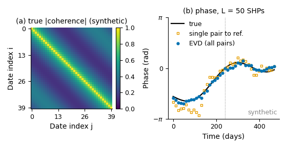

| SAR Concepts: Phase Linking in Depth | |
Phase linking estimates one phase per date for each distributed-scatterer pixel by fitting all interferometric pairs of a coregistered stack at once. The phase-linked stack is less noisy over fields, rangeland and debris, which helps unwrapping and SBAS inversion. The overview of time-series methods is in InSAR time series.
A persistent scatterer (PS) is dominated by one stable reflector, so a single pixel's phase is meaningful on every date. A distributed scatterer (DS) holds many small scatterers: its single-pixel phase is speckle-noisy and its coherence decays with time. Averaging similar neighbours gives the covariance of the N dates, modelled as
E[si sj*] = σi σj |γij| exp( j(θi − θj) )
where sn is the complex SLC value on date n, σn2 its mean intensity, |γij| the coherence between dates i and j, and θn the phase of date n (deformation, atmosphere, residual topography), in SNAP's Reference × conj(Secondary) order (InSAR). A single-reference stack uses N−1 of the N(N−1)/2 pairwise phases, an SBAS network a few more; phase linking uses all of them (780 pairs for 40 dates) to estimate N−1 phases.
For each pixel p the operator compares the amplitude time series of p with that of every pixel q in a
windowAzimuth × windowRange window (made odd) and keeps q as an SHP if a two-sample
test does not reject "same distribution" at significance α (shpAlpha, 0.05):
With only N samples per pixel, short stacks accept generously; a larger α rejects more (KS only; TLog and AD use fixed table
values). Candidates with
no-data on any date, or outside the scene, are skipped. If fewer than max(shpMin, N) SHPs remain, the
pixel is passed through: the output keeps the original SLC samples and tempCoh is no-data. The
floor of N is needed because a covariance from L < N samples is singular. Isolated PS and narrow features thus
keep their original phase.
From the set Ω of L SHPs the operator forms the sample covariance and normalises it:
Cij = (1/L) Σq∈Ω si(q) sj*(q), Tij = Cij / √( Cii Cjj )
T is Hermitian with a unit diagonal. Each |Tij| comes from L looks and is biased upward,
E[|γest|2] ≈ |γ|2 + (1 − |γ|2)/L
(|Tij| about 0.2, √(1/L), for unrelated dates at L = 20), more so because neighbouring pixels are correlated. Decorrelated long
pairs then look more reliable than they are. The optional coherenceBiasCorrection (off) sets each
off-diagonal magnitude to √max(0, (L|Tij|2 − 1)/(L − 1)), keeping the phase;
it helps EVD but can degrade EMI. There is no other regularisation (no shrinkage); EMI only ignores eigenvalues of
|T| below 10−9 when inverting it.
With ξ = [exp(jθ1) … exp(jθN)]T, the maximum-likelihood (ML) estimate for the Gaussian model above is (Monti Guarnieri & Tebaldini, 2008)
θML = arg minθ ξH ( |Γ|−1 ○ T ) ξ
where |Γ| holds the coherence magnitudes, −1 is the matrix inverse and ○ the
element-wise product. SqueeSAR (Ferretti et al., 2011) uses this "phase triangulation"; the constraint
|ξn| = 1 makes it iterative. SNAP offers two closed-form estimators (estimator):
Both subtract the phase of the reference epoch, so θref = 0.
The fit is scored by the temporal coherence
γT = 2 / (N(N−1)) · | Σi<j exp( j( arg Tij − (θi − θj) ) ) |
with θn now the estimates. It is 1 when they explain every pairwise phase. Below
tempCohMin (0.6) the pixel is passed through with its original samples, while tempCoh
still records γT.
The reference epoch is the zero-phase datum; its output sample is real-valued, which is harmless because only
phase differences are used downstream. If referenceEpochDate is empty, the date with index N/2 in date
order (from 0) is used: the median, or the later middle date when N is even, as in SBAS Inversion.

Figure 1. Synthetic example, 40 dates 12 days apart. (a) True coherence: exponential decay (36-day constant) plus a seasonal term that recovers near one year. (b) True phase (C-band, linear plus annual motion), the single-pair phase to the median reference date, and the EVD estimate, both from one 50-SHP sample matrix. Over 500 realisations the RMS error is 0.27 rad (EVD) against 0.53 rad (single pair).
Under the model above the closure phase arg(Tij Tjk Tik*) of any three dates is zero. Real DS violate this: soil moisture (De Zan et al., 2014) and vegetation leave non-zero closure. Ansari, De Zan & Parizzi (2021) describe short-lived "fading signals" present in short-baseline interferograms but not in long ones; a network of only short pairs sums them into a bias that can look like slow deformation. Phase linking uses the long pairs too, which reduces the bias but does not remove it.
closure_phase_rms (SBAS Inversion) on original interferograms. Each triplet is wrapped
to (−π, π], so it shows sub-cycle inconsistency, not whole-cycle unwrapping errors. Single-look
phase-linked interferograms close exactly at linked pixels; after multilooking or filtering, nearly
so.Phase Linking (PhaseLinking, Radar > Interferometric > Phase Linking > Phase Linking) needs a
coregistered complex stack of at least 3 dates, with the same number of dates for each polarisation (processed
separately). Burst
TOPS products are refused: run TOPSAR-Deburst first (TOPS). The _PL product
contains:
i_pl_<swath>_<pol>_ref_<date> and
i_pl_<swath>_<pol>_sec<k>_<date>, with matching q_pl_* bands
and virtual Intensity and Phase bands: original amplitude, estimated phase. Swath and polarisation are
omitted throughout if the input names have none. The stack metadata is updated for Interferogram, Coherence and
Multi-Reference InSAR.tempCoh_<pol> (unit coherence, on by default; NaN where too few SHPs or valid dates).numSHP_<pol> (integer, off by default; 0 is no-data).Stack size. Memory grows with N and the per-pixel eigen-decomposition as N3, so the code recommends at most about 50 dates, and longer stacks also raise the SHP floor to N.
| Parameter | Default | How to choose |
|---|---|---|
windowAzimuth × windowRange | 21 × 7 | Aim for a roughly square ground footprint holding at least 2N SHPs. On Sentinel-1 IW (about 14 m azimuth,
3.7 m ground range) the default covers about 290 m × 26 m; windowAzimuth 7 and windowRange 21
give about 100 m × 80 m with the same pixel count. |
shpTest | KS | KS in general; AD for stricter selection; TLog for speed. |
shpAlpha | 0.05 | Raise to reject more neighbours near boundaries (KS only; TLog and AD use fixed table values). |
shpMin | 20 | Effective minimum is max(shpMin, N). |
estimator | EVD | EMI for low-coherence DS (closer to ML); compare with EVD on a test area. |
tempCohMin | 0.6 | Lower it to link more pixels at more risk; mask on
tempCoh afterwards. |
coherenceBiasCorrection | off | Consider with EVD when SHP counts are low; leave off with EMI. |
referenceEpochDate | empty (median) | ddMMMyyyy; a date with good
coherence to the rest. |
Next steps. Form pairs from the _PL stack with Multi-Reference InSAR, filter, unwrap with
SNAPHU and run SBAS
Inversion. Band requirements and export routes (PyRate) are in InSAR time series
and the time-series workflow.
numSHP and the
NaN share of tempCoh._PL pixel as phase-linked. Where tempCoh is NaN or below the
threshold, the phase is the original.Related concepts: InSAR time series, coherence, InSAR, phase unwrapping, TOPS, glossary, bibliography.
Methods mentioned above that SNAP does not implement: